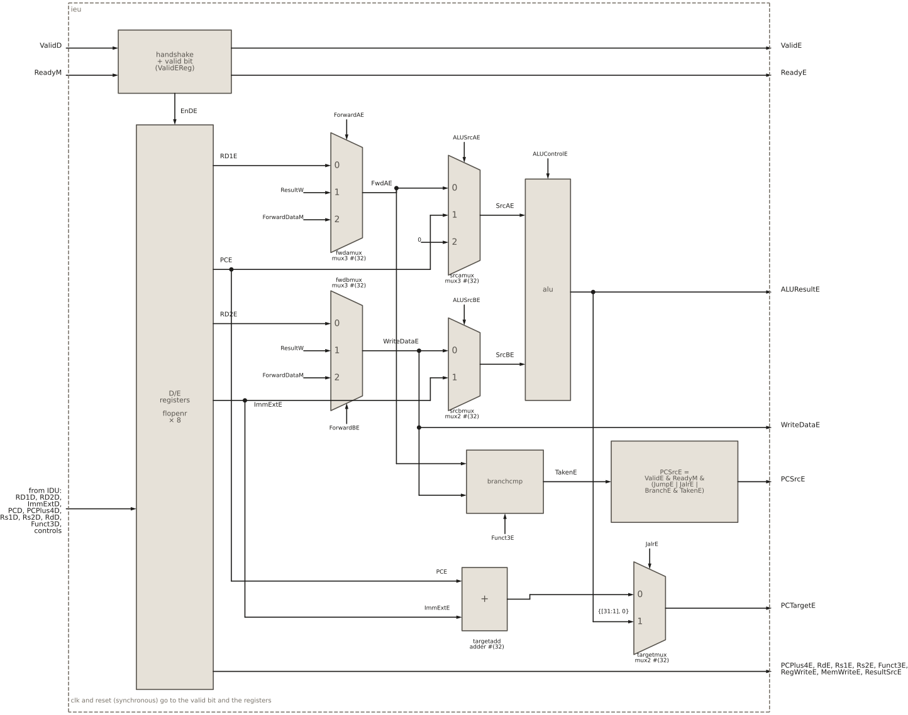
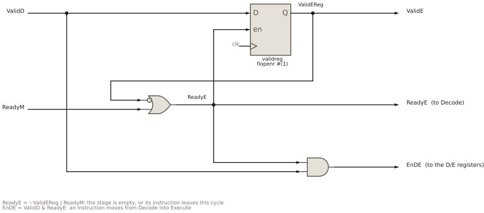
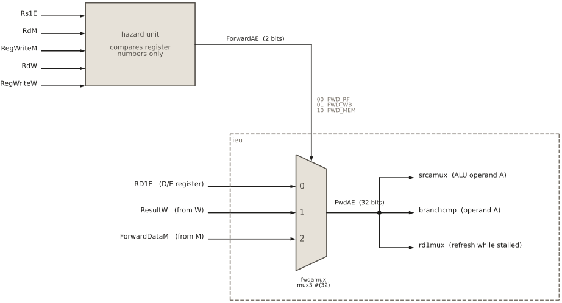
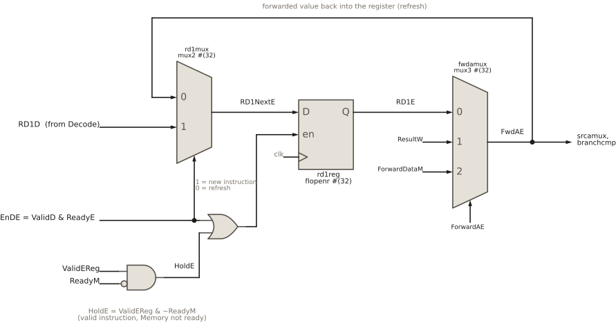

10 Integer execution unit
Integer execution unit
10.1 Goal for this week
- Know what the integer execution unit (IEU) does, and which instructions it executes
- Read the IEU interface: the handshake with Decode and Memory, the operands and controls from Decode, the forwarding inputs and the redirect
- Build the IEU from generic blocks: the D/E pipeline registers, the forwarding and operand multiplexers, the ALU and the branch logic
- Understand why the operand registers must be refreshed with forwarded values while the stage waits
10.2 Introduction
The execution stage is the heart of every CPU. It is the place where an instruction actually does its work: two numbers are added, compared or shifted, a memory address is computed, a branch decides where the program goes next. The stages before it only prepare this moment. Fetch brings the instruction, Decode works out what it means and reads its operands. The stages after it only finish the job. Memory performs the access whose address Execute has computed, and Writeback stores the result in the register file.
HIPV implements the base integer instruction set of RISC-V, RV32I. It has no multiplication and division (the M extension) and no floating point, so every operation the IEU performs is simple enough to finish in a single clock cycle. The IEU handles three kinds of work:
- Arithmetic and logic. The register–register instructions
add,sub,sll,slt,sltu,xor,srl,sra,orandand, and their register–immediate formsaddi,slli,slti,sltiu,xori,srli,srai,oriandandi. The two upper-immediate instructionsluiandauipcare also additions in the ALU. - Address calculation. Loads and stores address memory as
rs1 + imm. The IEU computes this sum, and the Memory stage uses it. - Control flow. The six conditional branches
beq,bne,blt,bge,bltuandbgeu, and the two jumpsjalandjalr. The IEU decides whether the branch is taken, computes the target, and tells Fetch to continue from there.
10.3 Interface of the IEU
The ports of the IEU fall into five groups: the handshake with Decode together with everything Decode has produced, the forwarding inputs, the redirect to Fetch and Decode, and the handshake with the Memory stage together with the stage outputs. As before, the suffix of each name says which stage the signal belongs to.
module ieu (input logic clk, reset,
// handshake with the Decode stage
input logic ValidD,
output logic ReadyE,
// inputs from Decode
input logic [31:0] RD1D, RD2D, ImmExtD, PCD, PCPlus4D,
input logic [4:0] Rs1D, Rs2D, RdD,
input logic [2:0] Funct3D,
input logic RegWriteD, MemWriteD, BranchD, JumpD, JalrD,
input logic [1:0] ResultSrcD, ALUSrcAD,
input logic ALUSrcBD,
input logic [3:0] ALUControlD,
// forwarding (from the hazard unit and later stages)
input logic [1:0] ForwardAE, ForwardBE,
input logic [31:0] ForwardDataM, ResultW,
// redirect to Fetch/Decode
output logic PCSrcE,
output logic [31:0] PCTargetE,
// handshake with the Memory stage
output logic ValidE,
input logic ReadyM,
// stage outputs to Memory
output logic [31:0] ALUResultE, WriteDataE, PCPlus4E,
output logic [4:0] RdE,
output logic [4:0] Rs1E, Rs2E,
output logic [2:0] Funct3E,
output logic RegWriteE, MemWriteE,
output logic [1:0] ResultSrcE);10.3.1 Handshake with Decode
The IEU receives instructions from Decode over the same valid/ready handshake that connects Fetch and Decode (Section 9.5). ValidD says that Decode offers a decoded instruction, and ReadyE says that Execute can accept it. The instruction moves into Execute at a clock edge where both are high. How ReadyE is computed is the subject of Section 10.5.
10.3.2 Signals from Decode
Decode hands the IEU everything the instruction needs, already worked out. The signals fall into five groups:
| Group | Signals | Used for |
|---|---|---|
| ALU operation | ALUControlD, ALUSrcAD, ALUSrcBD |
what the ALU computes, and from which operands |
| Branches and jumps | BranchD, JumpD, JalrD, Funct3D |
whether to redirect, and where |
| Later stages | MemWriteD, ResultSrcD, RegWriteD, RdD |
not used here, passed on to Memory and Writeback |
| Operands | RD1D, RD2D, ImmExtD, PCD, PCPlus4D |
the data to compute with |
| Register numbers | Rs1D, Rs2D |
the forwarding decision in the hazard unit |
Funct3D serves two purposes. For a branch it selects the condition (beq, blt, …), and for a load or store it selects the access size, which is why it also travels on to the Memory stage. The control signals for later stages pass through the IEU unchanged: Execute stores them in its pipeline registers and hands them on together with its result.
10.3.3 Forwarding inputs
An operand read from the register file in Decode can be out of date. The instruction that produces it may still be in the Memory or Writeback stage, with its result computed but not yet written to the register file. The IEU therefore receives the two newest results in the pipeline:
ForwardDataM, the result of the instruction in the Memory stage. For a load this is the loaded data, otherwise the ALU result.ResultW, the result of the instruction in the Writeback stage.
The hazard unit decides which of the values the IEU should use, and tells it with two 2-bit selects, ForwardAE for operand A and ForwardBE for operand B. For that decision it needs to know which registers the instruction in Execute reads, so the IEU exports Rs1E and Rs2E.
10.3.4 Redirect to Fetch and Decode
Branches and jumps are resolved here, so the IEU drives the redirect that we met from the receiving side in the IFU chapter: PCSrcE says that a jump or a taken branch has occurred, and PCTargetE carries the target address. Fetch loads its PC with the target, and Decode throws away the instruction it holds, which was fetched from the wrong path.
10.3.5 Handshake and outputs to Memory
Towards the Memory stage, the IEU is the sender: ValidE says that its outputs hold a valid instruction, and ReadyM says that the Memory stage can take it. The outputs are the ALU result ALUResultE, which is either the result of an arithmetic instruction or the address of a load or store, the store data WriteDataE, the return address PCPlus4E for jal and jalr, and the controls that the later stages still need.
10.4 Structure of the IEU

fwdamux, fwdbmux), the operand multiplexers (srcamux, srcbmux), the ALU, and the branch logic (branchcmp, targetadd, targetmux) that drives the redirect.
Figure 10.1 shows the IEU. Data flows from left to right through four parts, and the rest of the chapter takes them one at a time:
- the handshake logic and the pipeline registers, which accept the instruction from Decode and hold it while it executes;
- the forwarding multiplexers, which replace an out-of-date register operand with a newer value from the Memory or Writeback stage;
- the ALU with its two operand multiplexers, which computes the result;
- the jump mechanism, which evaluates the branch condition, computes the target and drives the redirect.
10.5 Handshake logic and pipeline registers

ReadyE tells Decode that Execute can take a new instruction, EnDE loads the D/E registers, and validreg remembers whether the stage holds a valid instruction.
The handshake logic is the same as in Decode (Figure 9.3), with one difference: Decode also listens to PCSrcE and flushes its instruction on a redirect, while Execute is never flushed. A branch is resolved in Execute, so everything that is wrong about it lies behind it, in Fetch and Decode. The branch itself is correct and continues to the Memory stage like any other instruction.
// D/E handshake: accept when the stage is empty or being drained
assign ReadyE = ~ValidEReg | ReadyM;
assign EnDE = ValidD & ReadyE;
assign ValidE = ValidEReg;
// D/E valid bit
always_ff @(posedge clk)
if (reset) ValidEReg <= 1'b0;
else if (ReadyE) ValidEReg <= ValidD;Three signals make up the handshake (Figure 10.2):
ValidERegis the valid bit of the stage, a one-bit register that says whether the stage holds a valid instruction or a bubble. It is reset to 0, an empty stage. Whenever the stage can accept a new instruction, it takes overValidD: it becomes 1 if Decode delivers an instruction, and 0, a bubble, if Decode has nothing to offer. It is also the stage outputValidE.ReadyEtells Decode that Execute can accept a new instruction. That is the case when the stage is empty (~ValidEReg), or when the instruction it holds leaves at this very edge because the Memory stage is ready to take it (ReadyM). The second term is what lets the pipeline move one instruction per cycle: the place is freed and refilled at the same edge. When the Memory stage stalls,ReadyEdrops, and the stall propagates backwards to Decode and Fetch.EnDEis the transfer itself: Decode offers an instruction (ValidD) and Execute accepts it (ReadyE). It is the enable of the pipeline registers.
10.5.1 The D/E pipeline registers
The pipeline registers store everything Decode has produced for the instruction, and they are loaded at the transfer, on EnDE. Between transfers they hold their value, so the instruction stays in Execute, with all its operands and controls stable, for as long as the Memory stage makes it wait. All of them are the generic flopenr, with the width of the signals they store:
flopenr #(32) rd1reg(.clk(clk), .reset(reset), .en(EnDE | HoldE), .D(RD1NextE), .Q(RD1E));
flopenr #(32) rd2reg(.clk(clk), .reset(reset), .en(EnDE | HoldE), .D(RD2NextE), .Q(RD2E));
flopenr #(32) immreg(.clk(clk), .reset(reset), .en(EnDE), .D(ImmExtD), .Q(ImmExtE));
flopenr #(32) pcreg(.clk(clk), .reset(reset), .en(EnDE), .D(PCD), .Q(PCE));
flopenr #(32) pcplus4reg(.clk(clk), .reset(reset), .en(EnDE), .D(PCPlus4D), .Q(PCPlus4E));
flopenr #(15) regsreg(.clk(clk), .reset(reset), .en(EnDE),
.D({Rs1D, Rs2D, RdD}), .Q({Rs1E, Rs2E, RdE}));
flopenr #(3) funct3reg(.clk(clk), .reset(reset), .en(EnDE), .D(Funct3D), .Q(Funct3E));
flopenr #(14) ctrlreg(.clk(clk), .reset(reset), .en(EnDE),
.D({RegWriteD, MemWriteD, BranchD, JumpD, JalrD, ResultSrcD,
ALUSrcAD, ALUSrcBD, ALUControlD}),
.Q({RegWriteE, MemWriteE, BranchE, JumpE, JalrE, ResultSrcE,
ALUSrcAE, ALUSrcBE, ALUControlE}));Signals that belong together share one register: the three register numbers in regsreg, and all fourteen control bits in ctrlreg. The concatenation {…} packs them into one vector on the input and unpacks them on the output. Only the two register operands, in rd1reg and rd2reg, have a different input and enable. They are the subject of Section 10.6.1.
10.6 Forwarding

ForwardAE; fwdamux in the IEU selects the value, FwdAE.
The two register operands pass through a forwarding multiplexer each, fwdamux for operand A (rs1) and fwdbmux for operand B (rs2). Both are three-input multiplexers, the generic mux3:
module mux3 #(parameter WIDTH = 8) (
input logic [WIDTH-1:0] D0, D1, D2,
input logic [1:0] S,
output logic [WIDTH-1:0] Y);
assign Y = (S == 2'b10) ? D2 : (S == 2'b01) ? D1 : D0;
endmoduleThe nested conditional operator checks S against the two encodings of D2 and D1, and falls back to D0 for everything else, including the unused 11. In the IEU, the two instances choose between three versions of the same register:
// forwarding muxes: register operand / ResultW / ForwardDataM
mux3 #(32) fwdamux(.D0(RD1E), .D1(ResultW), .D2(ForwardDataM), .S(ForwardAE), .Y(FwdAE));
mux3 #(32) fwdbmux(.D0(RD2E), .D1(ResultW), .D2(ForwardDataM), .S(ForwardBE), .Y(WriteDataE));D0is the value from the D/E pipeline register,RD1EorRD2E, as it was read from the register file in Decode;D1isResultW, the result of the instruction in the Writeback stage;D2isForwardDataM, the result of the instruction in the Memory stage.
The selects come from the hazard unit (Figure 10.3). Their three values are named in the package hipv_pkg, so that the code says what a select means rather than which bits it has:
// forwarding select (ForwardAE / ForwardBE, from the hazard unit)
localparam logic [1:0] FWD_RF = 2'b00; // register operand from D/E register
localparam logic [1:0] FWD_WB = 2'b01; // ResultW from the Writeback stage
localparam logic [1:0] FWD_MEM = 2'b10; // ForwardDataM from the Memory stageThe hazard unit selects FWD_MEM when the instruction in the Memory stage writes the register the operand reads, FWD_WB when the instruction in Writeback does, and FWD_RF otherwise. If both match, the Memory stage wins, because it holds the younger instruction and therefore the newer value. The details of that decision belong to the chapter on hazards. The IEU only carries it out.
The outputs of the two multiplexers are the true values of rs1 and rs2, and every later block in the IEU uses them instead of RD1E and RD2E. FwdAE goes to the ALU operand multiplexer and to the branch comparator. WriteDataE goes to the same two places, and on to the Memory stage as the store data, which is where its name comes from.
10.6.1 Refreshing the operands with forwarded values
Forwarding as described so far has a gap. An instruction does not always spend just one cycle in Execute. When the Memory stage is busy with a slow load or store, ReadyM is low, and the instruction in Execute has to wait. The forwarded value, however, is available only as long as its producer is in the Memory or Writeback stage. If the producer leaves Writeback while the consumer is still waiting, nothing forwards the value any more. The operand in the pipeline register does not help either: it was read from the register file in Decode, before the producer wrote it, so it is stale.
Consider this sequence on a slow data memory:
lw x5, 0(x10) # slow memory: the next instructions bunch up
addi x1, x0, 77 # producer of x1
sw x5, 4(x10) # holds the Memory stage
add x3, x1, x0 # waits in Execute; x1 forwarded from W for one cycle onlyWhen addi reaches Writeback, sw is in the Memory stage and add in Execute. The hazard unit sees that add reads x1 and addi writes it, and selects FWD_WB. But sw holds the Memory stage for several cycles, so add cannot leave Execute. In the next cycle addi has left the pipeline, the hazard unit falls back to FWD_RF, and fwdamux delivers RD1E, the old value of x1 read in Decode. When add finally executes, it computes with the wrong operand.
The solution is to not let the forwarded value go: as long as the instruction waits, the operand register is reloaded with the output of the forwarding multiplexer. This is a feedback loop from fwdamux back to the input of rd1reg, and the same from fwdbmux to rd2reg.
10.6.2 The refresh loop in SystemVerilog
// While an instruction waits in E, refresh its register operands with
// the forwarded values: the producer can retire from W (and stop being
// forwarded) before this instruction leaves E.
assign HoldE = ValidEReg & ~ReadyM;
mux2 #(32) rd1mux(.D0(FwdAE), .D1(RD1D), .S(EnDE), .Y(RD1NextE));
mux2 #(32) rd2mux(.D0(WriteDataE), .D1(RD2D), .S(EnDE), .Y(RD2NextE));
flopenr #(32) rd1reg(.clk(clk), .reset(reset), .en(EnDE | HoldE), .D(RD1NextE), .Q(RD1E));
flopenr #(32) rd2reg(.clk(clk), .reset(reset), .en(EnDE | HoldE), .D(RD2NextE), .Q(RD2E));This code describes the datapath in Figure 10.4, shown for operand A. Operand B is built the same way, with rd2mux, rd2reg and fwdbmux.

rd1mux chooses between the operand from Decode and the forwarded value FwdAE; rd1reg is loaded on a transfer (EnDE) and in every cycle the instruction waits (HoldE).
The datapath has three parts:
rd1muxchooses what will be stored inrd1reg.- When
EnDE = 1, a new instruction enters Execute, and the register stores its operand from Decode,RD1D. - When
EnDE = 0, no instruction enters, and the register stores the output of the forwarding multiplexer,FwdAE.
- When
rd1regstores the operand. Its enable isEnDE | HoldE, so it loads in two situations: at the transfer from Decode, and in every cycle in which the stage is on hold.HoldE = ValidEReg & ~ReadyMsays that the stage holds a valid instruction, but the Memory stage is not ready to take it, so the instruction has to wait.fwdamuxis the same forwarding multiplexer as before. Through the loop it also decides whatrd1regstores while the stage is on hold:ForwardDataM,ResultW, or, withFWD_RF, the register’s own value, which simply keeps it.
HoldE and EnDE are never high at the same time. Substituting ReadyE shows that HoldE is exactly its complement, ValidEReg & ~ReadyM = ~(~ValidEReg | ReadyM) = ~ReadyE: the stage is on hold precisely when it cannot accept a new instruction, and then EnDE is 0. The register therefore never has to choose between a new operand and a refresh, and EnDE alone is a sufficient select for rd1mux. When both are 0, the stage is empty, or its instruction is leaving without a successor, and the register keeps a value that nobody uses.
Back to the example. In the cycle in which addi is in Writeback, add is on hold, and fwdamux delivers ResultW = 77. At the end of the cycle rd1reg stores 77. In the next cycle addi is gone and the hazard unit selects FWD_RF, but RD1E now is 77, and the loop keeps it there until add leaves Execute.
The refresh is harmless when the forwarded value is not ready yet. If the producer is a load still waiting for its data, ForwardDataM carries garbage, and rd1reg stores it. But while the load is in the Memory stage, ReadyM is low, so the consumer is on hold and does not use the garbage. When the data is there, ReadyM rises, ForwardDataM carries the loaded value, and the consumer leaves Execute computing with it, straight from fwdamux. This is why HIPV needs no special load-use stall: the elastic handshake and the refresh loop together cover that case.
10.7 The ALU
The arithmetic-logic unit (ALU) is the workhorse of every CPU. It is a purely combinational block: it takes two operands, computes one of a fixed set of operations on them, and produces a result, all within one clock cycle and without any state of its own. Which operation it computes is chosen by a control input. Most instructions of a program pass through it, not only the arithmetic ones. A load or store uses it for the address, and jalr for the jump target.
The ALU of HIPV has two 32-bit operands, A and B, a 4-bit control ALUControl, and a 32-bit result Y. It implements the ten operations that RV32I needs. Inside, it is simply a separate circuit for each operation (an adder, a subtractor, a shifter, a comparator, the bitwise gates), followed by a large multiplexer that selects one result.
10.7.1 Operands of the ALU
The operands of the ALU come from two multiplexers, one per operand:
// ALU operand selection: A = rs1/PC/zero, B = rs2/immediate
mux3 #(32) srcamux(.D0(FwdAE), .D1(PCE), .D2(32'b0), .S(ALUSrcAE), .Y(SrcAE));
mux2 #(32) srcbmux(.D0(WriteDataE), .D1(ImmExtE), .S(ALUSrcBE), .Y(SrcBE));Operand A, SrcAE, is selected by ALUSrcAE from three sources:
ALUSrcAE |
SrcAE |
Used by | Example |
|---|---|---|---|
00 SRCA_RF |
FwdAE, the forwarded rs1 |
almost all instructions | add x3, x1, x2; lw x3, 8(x1) |
01 SRCA_PC |
PCE, the address of the instruction |
auipc |
auipc x5, 0x12 gives x5 = PC + 0x12000 |
10 SRCA_ZERO |
0 | lui |
lui x5, 0x12 gives x5 = 0 + 0x12000 |
Selecting zero for lui is a small trick. lui only has to copy its immediate into the destination register, and adding it to zero does that with the ALU’s ordinary ADD, without a separate path to the output.
Operand B, SrcBE, is selected by ALUSrcBE from two sources:
ALUSrcBE |
SrcBE |
Used by | Example |
|---|---|---|---|
| 0 | WriteDataE, the forwarded rs2 |
register–register instructions | add x3, x1, x2 |
| 1 | ImmExtE, the extended immediate |
register–immediate, loads, stores, lui, auipc, jalr |
addi x3, x1, 5; sw x3, 8(x1) |
Both multiplexers come after the forwarding multiplexers, so whenever the ALU uses a register, it uses its forwarded value.
10.7.2 The ALU in SystemVerilog
The ALU is one of the few behavioral blocks of the core. It is a single case over ALUControl, inside always_comb:
module alu (input logic [31:0] A, B,
input logic [3:0] ALUControl,
output logic [31:0] Y);
import hipv_pkg::*;
always_comb
case (ALUControl)
ALU_ADD: Y = A + B;
ALU_SUB: Y = A - B;
ALU_SLL: Y = A << B[4:0];
ALU_SLT: Y = {31'b0, $signed(A) < $signed(B)};
ALU_SLTU: Y = {31'b0, A < B};
ALU_XOR: Y = A ^ B;
ALU_SRL: Y = A >> B[4:0];
ALU_SRA: Y = $unsigned($signed(A) >>> B[4:0]);
ALU_OR: Y = A | B;
ALU_AND: Y = A & B;
default: Y = 32'b0;
endcase
endmoduleThe operation codes ALU_ADD to ALU_AND are the constants 0 to 9 from hipv_pkg, imported at the top of the module. Decode produces the same names, so the two ends always agree on the encoding. A few lines deserve a closer look:
- Shifts use only the lowest five bits of
B, because a 32-bit value can be shifted by at most 31 places. This also makes the immediate shifts work: insrai, bit 10 of the immediate distinguishes it fromsrli, but it lies outsideB[4:0]and does not disturb the shift amount. - Signed and unsigned. SystemVerilog treats a
logicvector as unsigned.sltandsltucompare the same bits, butsltfirst reinterprets them with$signed, so that0xFFFFFFFFcounts as −1 and not as 4 294 967 295. The comparison gives one bit, and{31'b0, …}extends it to the 32-bit result 0 or 1. - Arithmetic shift.
>>>fills the vacated bits with copies of the sign bit only if its operand is signed, soAis converted with$signed, and the result is converted back with$unsignedbefore it is assigned toY. defaultcovers the six unused codes 10 to 15. Without it,Ywould not be assigned for them, andalways_combwould infer a latch (see the chapter on designing with SystemVerilog).
In the IEU, the ALU is a single instance, and its result is the stage output ALUResultE:
alu alu(.A(SrcAE), .B(SrcBE), .ALUControl(ALUControlE), .Y(ALUResultE));You have built this block before. In the second lab exercise you implemented a “dummy” 4-bit ALU with a 3-bit alu_control, using operators, intermediate signals and nested conditionals. The ALU of HIPV is the same idea at full size. The operands are 32 bits instead of 4, the control selects ten operations instead of eight, and the selection is written as a case in always_comb instead of a chain of ? :. The two describe the same multiplexer, but the case stays readable with ten branches. The lab operations also map onto the core:
Lab ALU (alu_control) |
In HIPV |
|---|---|
| addition, subtraction | ALU_ADD, ALU_SUB |
| bitwise AND, OR, XOR | ALU_AND, ALU_OR, ALU_XOR |
| compare (equal) | beq/bne in branchcmp, not in the ALU |
pass-through b |
lui: 0 + imm, through ALU_ADD with SRCA_ZERO |
pass-through a |
not needed |
New in HIPV are the shifts and the signed/unsigned comparisons slt and sltu, and these are where the typical mistakes lie. The IEU testbench in the HIPV repository, tb/unit/ieu/test_ieu.py, checks exactly these. Its first test, test_alu_ops, runs all ten operations, including a signed and an unsigned compare on the same operands and an arithmetic shift of a negative value. Run it with make in tb/unit/ieu.
10.8 Jump mechanism
The last part of the IEU decides whether the program continues sequentially or jumps. It answers three questions, each with its own block: is the branch condition true (branchcmp), where does the jump go (targetadd and targetmux), and should Fetch be redirected now (PCSrcE).
10.8.1 Conditional branches: branchcmp
The branch comparator evaluates the condition of the six RV32I branches, selected by Funct3E:
module branchcmp (input logic [31:0] A, B,
input logic [2:0] Funct3E,
output logic TakenE);
always_comb
case (Funct3E)
3'b000: TakenE = (A == B); // beq
3'b001: TakenE = (A != B); // bne
3'b100: TakenE = ($signed(A) < $signed(B)); // blt
3'b101: TakenE = ($signed(A) >= $signed(B)); // bge
3'b110: TakenE = (A < B); // bltu
3'b111: TakenE = (A >= B); // bgeu
default: TakenE = 1'b0; // reserved encodings
endcase
endmoduleIt is connected to the forwarded register operands, not to the ALU operands:
branchcmp bcmp(.A(FwdAE), .B(WriteDataE), .Funct3E(Funct3E), .TakenE(TakenE));A branch compares two registers, rs1 and rs2, so it needs the same forwarded values as any other instruction. Many processors compare with the ALU, by subtracting and checking the result. HIPV uses a separate comparator, which costs a little more hardware, but keeps the ALU free and the two jobs independent. TakenE is meaningful only for branches. For every other instruction it is computed from whatever Funct3E and the operands happen to be, and ignored, because BranchE is 0.
10.8.2 Jump targets: targetadd and targetmux
RV32I has two kinds of targets. Branches and jal are PC-relative: the target is the address of the instruction plus the immediate. jalr is register-relative: the target is rs1 + imm, which is how a function returns (jalr x0, 0(x1), written ret) and how a program jumps through a table of addresses.
// branch/jump target: PC + imm for branch/jal, ALU (rs1 + imm) for jalr
adder #(32) targetadd(.A(PCE), .B(ImmExtE), .Y(PCTargetBaseE));
assign JalrTargetE = {ALUResultE[31:1], 1'b0};
mux2 #(32) targetmux(.D0(PCTargetBaseE), .D1(JalrTargetE), .S(JalrE), .Y(PCTargetE));The PC-relative target has its own adder, targetadd, the same generic adder that increments the PC in the IFU. The register-relative target needs no new hardware: for jalr, Decode sets up the ALU to compute rs1 + imm, as for a load. The ISA requires the lowest bit of the jalr target to be cleared, which costs nothing in hardware, only wiring: {ALUResultE[31:1], 1'b0}. The multiplexer targetmux then selects the ALU path for jalr and the adder for everything else.
The ALU result of a jal or jalr is not what the instruction writes to its destination register. Both write the return address, PC + 4, which is why PCPlus4E travels on to Writeback with them.
10.8.3 The redirect: PCSrcE
The last line of the IEU decides whether to redirect:
// redirect, qualified with the valid bit and gated to the retire cycle
assign PCSrcE = ValidEReg & ReadyM & (JumpE | JalrE | (BranchE & TakenE));The term in parentheses is the RV32I rule: a jump (jal, jalr) always changes the PC, a branch only if its condition is true. The two qualifiers in front make it safe in the elastic pipeline:
ValidEReg: a bubble must never redirect. When the stage is empty, its pipeline registers still hold the controls of the last instruction, and without the valid bit an old branch could fire a second time.ReadyM: the redirect fires only in the cycle in which the instruction leaves Execute. This has two reasons. First, it makesPCSrcEa one-cycle pulse, which is what the IFU expects. Second, while the instruction waits, its operands may not be final. A branch that depends on a load still in the Memory stage compares garbage until the data arrives. The refresh loop will correct its operands, but a redirect issued from the garbage could not be taken back. Waiting forReadyMmeans the branch decides only with its final operands.
Note what does not happen: the branch itself is not flushed. It leaves Execute normally at the same edge, and the redirect removes only the instructions behind it, in Fetch and Decode.
10.9 Summary
The IEU executes every RV32I instruction in a single cycle. Like the IFU, most of it is structural, built from flopenr, mux2, mux3 and adder. Only the two leaf cells that compute, the ALU and the branch comparator, are behavioral.
Its four parts follow the flow of an instruction. The handshake logic and the D/E pipeline registers accept the instruction from Decode and hold it while it waits. The forwarding multiplexers replace out-of-date register operands with newer values from the Memory and Writeback stages, and the refresh loop keeps those values in the operand registers when the stage stalls, so that a forwarded value is never lost. The ALU computes the result, or the address of a load or store. The jump mechanism compares the branch operands, computes the target, and redirects Fetch exactly once, in the cycle a taken branch or jump leaves Execute.